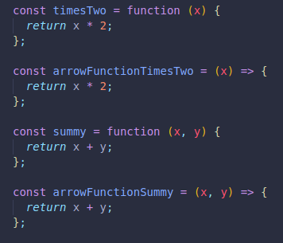
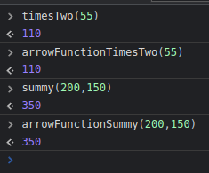
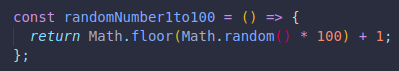
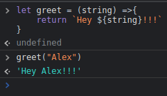
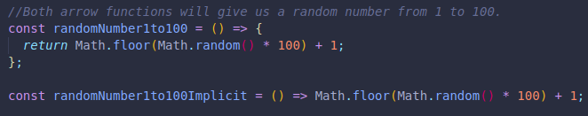
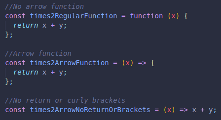
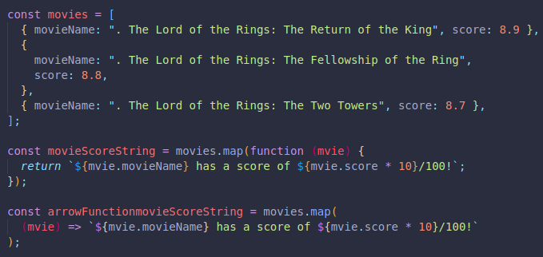

We can also create functions using arrows!
It is more compact compared to a regular function, no need for the function keyword.
They can be seen as an aternative, and the code is a bit shorter too.
 If we are not planning on using any arguments, we must leave the parenthesis empty, but they must still be included.
Another example.
We can skip the return keyword when we use implicit return arrow function.
We simply eliminate return and replace the curly brackets for parenthesis.
THEY ONLY WORK IF WE HAVE A SINGLE EXPRESSION TO BE EVALUATED IN OUR FUNCTION. JUST FOR ONE LINERS/SHORT FUNCTIONS.
We can even eliminate the previous parenthesis if we wanted a one line piece of code.
Here are all the options.
We can now use arrow functions to improve our previous code with arrays of objects.
